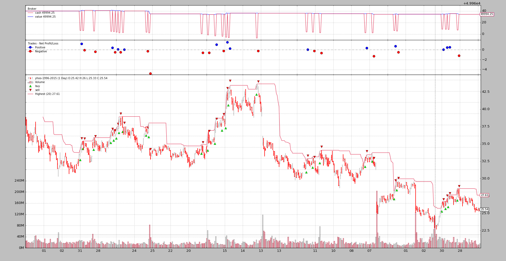

Pinkfish Challenge¶
(Sample and changes added to release 1.7.1.93)
Along the way backtrader has gotten maturity, new features and of course complexity. Many of the new features have been introduced after requests, comments, questions from users. Small challenges which have proven that most of the design decisions were at least not that wrong even if some things could have been done in many other ways, sometimes probably in a better way.
As such it seems that those small challenges are pushes to test the flexibility
and adaptability of the platform to new unplanned and unpexpected situations
and the pinkfish challenge is yet another one. pinkfish is another Python
backtesting framework (listed in the README) which can be found under:
pinkfish. The site contains what has
been the challenge to solve:
- ‘buying on the close’ on the SAME day a ‘new 20 day high is set’ were not allowed
One of the features gives a hint as how the platform operates for such a feat:
- uses daily data (vs minute or tick data) for intraday trading
The author was additionally put off by the complexity of the, back then, of the existing backtesting libraries. Whether that holds true for backtrader (in its infancy back then) is a question to be answered by the pinkfish author himself.
No mod solution¶
- backtrader supports filters for data feeds and one existed that allows
- breaking a daily bar in 2 parts to let people buy after having seen only the opening price. The 2nd part of the day (high, low, close) is evaluated in a 2nd tick. This effectively achieves the uses daily data (vs minute or tick data) for intraday trading.
This filter tries to make a complete replay action without involving the built-in replayer.
An obvious evolution of this filter breaks the daily bar in 2 bars with an (open, high, low) first and then a 2nd complete bar (open, high, low, close).
The buying on the close is achieved by issuing an order with
backtrader.Order.Close as execution type.
This is in the sample available with -no-replay. An execution:
$ ./pinkfish-challenge.py --no-replay
Part of the output:
...
0955,0478,0478,2006-11-22T00:00:00,27.51,28.56,27.29,28.49,16027900.00,0.00
High 28.56 > Highest 28.56
LAST 19 highs: array('d', [25.33, 25.6, 26.4, 26.7, 26.62, 26.6, 26.7, 26.7, 27.15, 27.25, 27.65, 27.5, 27.62, 27.5, 27.5, 27.33, 27.05, 27.04, 27.34])
-- BUY on date: 2006-11-22
-- BUY Completed on: 2006-11-22
-- BUY Price: 28.49
0956,0478,0478,2006-11-22T23:59:59.999989,27.51,28.56,27.29,28.49,32055800.00,0.00
...
It works ...
After seeing the 1st part of the day (Line:
0955)If a new 20 day high is in place a
Closeorder is issuedAnd the order gets executed with the closing price of the 2nd part of the day (Line:
0956)The closing price is
28.49which is the BUY Price seen innotify_orderin the strategy
The output contains rather verbose parts simply for identification of the last
20 highs. The sample sells also very quickly, to let the behavior be tested
several times. But the holding period can be altered with --sellafter N,
where N is the number of bars to hold before cancelling (see Usage at the
end)
The problem with the no mod solution¶
This is not really a replay solution and this can be seen if the execution
type of the order is changed from Close to Market. A new execution:
$ ./pinkfish-challenge.py --no-replay --market
Now the output for the same period as above:
...
0955,0478,0478,2006-11-22T00:00:00,27.51,28.56,27.29,28.49,16027900.00,0.00
High 28.56 > Highest 28.56
LAST 19 highs: array('d', [25.33, 25.6, 26.4, 26.7, 26.62, 26.6, 26.7, 26.7, 27.15, 27.25, 27.65, 27.5, 27.62, 27.5, 27.5, 27.33, 27.05, 27.04, 27.34])
-- BUY on date: 2006-11-22
-- BUY Completed on: 2006-11-22
-- BUY Price: 27.51
0956,0478,0478,2006-11-22T23:59:59.999989,27.51,28.56,27.29,28.49,32055800.00,0.00
...
And the problem can be easily identified
Instead of the closing price the order is executing with the opening price, because the Market order takes the 1st price available in the 2nd bar, namely
27.51, which is unfortunately the opening price of the day and no longer available.This is due to the fact that the filter is not really replaying but rather breaking up the bar in two parts and doing a soft replaying
The right “mod” solution¶
Getting also the Market order to pick the closing price.
This comprises:
A filter which breaks the bar in two parts
And is compatible with the standard replay functionality available in backtrader
In this case the 2nd bar would be made up of just the
closeprice and even if the display shows a complete bar, the internal machinery only matches orders against the tick
Chaining filters in backtrader was already possible but this use case had not been taken into account:
Made 2 data “heartbeats” out of a single data “heartbeat”
Before this challenge it was about getting bars merged into larger bars.
A small extension into the core mechanism loading bars allows for a filter to add the 2nd part of the bar to an internal stash for re-processing before a new data heartbeat is taken into account. And because it is an extension and not a modification it has no impact.
The challenge has also given the chance to:
Look again into the early-age code written at the very beginning of backtrader for
Closeorders.And here a couple of lines and
ifconditions have been reworked to make matchingCloseorders more logical and if possible to deliver them instantly to the system (before the delivery of matching would mostly be done with a 1-bar delay, even if matched to the right bar)
One good thing after these changes:
- The logic in the filter is a lot easier, because there is no subtle replay attempt. Replay is done by the replay filter.
The anatomy of the filter for the 1st part of the broken bar:
- Copy the incoming data bar
- Make a copy as the OHL bar (no Close)
- Change the time to be date + sessionstart time
- Remove part of the volume (specified with parameter closevol to the filter)
- Nullify
OpenInterest(available at the end of the day)- Remove the
closeprice and replace it with the average of OHL- Add the bar to the internal stack for immediate processing by the next filter or strategy (the replay filter will take over)
The anatomy for the 2nd part of the broken bar:
- Copy the incoming data bar
- Replace OHL prices with the
Closeprice- Change the time to be date + sessionend time
- Remove the other part of the volume (specified with parameter closevol to the filter)
- Set
OpenInterest- Add the bar to the internal stash for delayed processing as the next data heartbeat, rather than fetching prices from the data
The code:
# Make a copy of current data for ohlbar
ohlbar = [data.lines[i][0] for i in range(data.size())]
closebar = ohlbar[:] # Make a copy for the close
# replace close price with o-h-l average
ohlprice = ohlbar[data.Open] + ohlbar[data.High] + ohlbar[data.Low]
ohlbar[data.Close] = ohlprice / 3.0
vol = ohlbar[data.Volume] # adjust volume
ohlbar[data.Volume] = vohl = int(vol * (1.0 - self.p.closevol))
oi = ohlbar[data.OpenInterest] # adjust open interst
ohlbar[data.OpenInterest] = 0
# Adjust times
dt = datetime.datetime.combine(datadt, data.p.sessionstart)
ohlbar[data.DateTime] = data.date2num(dt)
# Adjust closebar to generate a single tick -> close price
closebar[data.Open] = cprice = closebar[data.Close]
closebar[data.High] = cprice
closebar[data.Low] = cprice
closebar[data.Volume] = vol - vohl
ohlbar[data.OpenInterest] = oi
# Adjust times
dt = datetime.datetime.combine(datadt, data.p.sessionend)
closebar[data.DateTime] = data.date2num(dt)
# Update stream
data.backwards(force=True) # remove the copied bar from stream
data._add2stack(ohlbar) # add ohlbar to stack
# Add 2nd part to stash to delay processing to next round
data._add2stack(closebar, stash=True)
return False # the length of the stream was not changed
Executing without disabling replay and Close (let’s add plotting):
$ ./pinkfish-challenge.py --plot
The output for the same period:
...
0955,0478,0478,2006-11-22T00:00:00,27.51,28.56,27.29,27.79,16027900.00,0.00
High 28.56 > Highest 28.56
LAST 19 highs: array('d', [25.33, 25.6, 26.4, 26.7, 26.62, 26.6, 26.7, 26.7, 27.15, 27.25, 27.65, 27.5, 27.62, 27.5, 27.5, 27.33, 27.05, 27.04, 27.34])
-- BUY on date: 2006-11-22
-- BUY Completed on: 2006-11-22
-- BUY Price: 28.49
0956,0478,0478,2006-11-22T23:59:59.999989,27.51,28.56,27.29,28.49,32055800.00,0.00
...
Everything is ok and the closing price of 28.49 has been taken.
And the chart.
And last but not least to check the modifications have made sense:
$ ./pinkfish-challenge.py --market
The output for the same period:
...
0955,0478,0478,2006-11-22T00:00:00,27.51,28.56,27.29,27.79,16027900.00,0.00
High 28.56 > Highest 28.56
LAST 19 highs: array('d', [25.33, 25.6, 26.4, 26.7, 26.62, 26.6, 26.7, 26.7, 27.15, 27.25, 27.65, 27.5, 27.62, 27.5, 27.5, 27.33, 27.05, 27.04, 27.34])
-- BUY on date: 2006-11-22
-- BUY Completed on: 2006-11-22
-- BUY Price: 28.49
0956,0478,0478,2006-11-22T23:59:59.999989,27.51,28.56,27.29,28.49,32055800.00,0.00
..
And now the Market orders are picking the same price of 28.49 as the
Close orders, which in this particular use case was the expectation,
because replaying is happening and the 2nd part of the broken daily bar has a
single tick: 28.49 which is the closing price
Usage of the sample¶
$ ./pinkfish-challenge.py --help
usage: pinkfish-challenge.py [-h] [--data DATA] [--fromdate FROMDATE]
[--todate TODATE] [--cash CASH]
[--sellafter SELLAFTER] [--highperiod HIGHPERIOD]
[--no-replay] [--market] [--oldbuysell]
[--plot [kwargs]]
Sample for pinkfish challenge
optional arguments:
-h, --help show this help message and exit
--data DATA Data to be read in (default:
../../datas/yhoo-1996-2015.txt)
--fromdate FROMDATE Starting date in YYYY-MM-DD format (default:
2005-01-01)
--todate TODATE Ending date in YYYY-MM-DD format (default: 2006-12-31)
--cash CASH Cash to start with (default: 50000)
--sellafter SELLAFTER
Sell after so many bars in market (default: 2)
--highperiod HIGHPERIOD
Period to look for the highest (default: 20)
--no-replay Use Replay + replay filter (default: False)
--market Use Market exec instead of Close (default: False)
--oldbuysell Old buysell plot behavior - ON THE PRICE (default:
False)
--plot [kwargs], -p [kwargs]
Plot the read data applying any kwargs passed For
example (escape the quotes if needed): --plot
style="candle" (to plot candles) (default: None)
And the code itself¶
from __future__ import (absolute_import, division, print_function,
unicode_literals)
import argparse
import datetime
import backtrader as bt
import backtrader.indicators as btind
class DayStepsCloseFilter(bt.with_metaclass(bt.MetaParams, object)):
'''
Replays a bar in 2 steps:
- In the 1st step the "Open-High-Low" could be evaluated to decide if to
act on the close (the close is still there ... should not be evaluated)
- If a "Close" order has been executed
In this 1st fragment the "Close" is replaced through the "open" althoug
other alternatives would be possible like high - low average, or an
algorithm based on where the "close" ac
and
- Open-High-Low-Close
'''
params = (
('cvol', 0.5), # 0 -> 1 amount of volume to keep for close
)
def __init__(self, data):
self.pendingbar = None
def __call__(self, data):
# Make a copy of the new bar and remove it from stream
closebar = [data.lines[i][0] for i in range(data.size())]
datadt = data.datetime.date() # keep the date
ohlbar = closebar[:] # Make an open-high-low bar
# Adjust volume
ohlbar[data.Volume] = int(closebar[data.Volume] * (1.0 - self.p.cvol))
dt = datetime.datetime.combine(datadt, data.p.sessionstart)
ohlbar[data.DateTime] = data.date2num(dt)
dt = datetime.datetime.combine(datadt, data.p.sessionend)
closebar[data.DateTime] = data.date2num(dt)
# Update stream
data.backwards() # remove the copied bar from stream
# Overwrite the new data bar with our pending data - except start point
if self.pendingbar is not None:
data._updatebar(self.pendingbar)
self.pendingbar = closebar # update the pending bar to the new bar
data._add2stack(ohlbar) # Add the openbar to the stack for processing
return False # the length of the stream was not changed
def last(self, data):
'''Called when the data is no longer producing bars
Can be called multiple times. It has the chance to (for example)
produce extra bars'''
if self.pendingbar is not None:
data.backwards() # remove delivered open bar
data._add2stack(self.pendingbar) # add remaining
self.pendingbar = None # No further action
return True # something delivered
return False # nothing delivered here
class DayStepsReplayFilter(bt.with_metaclass(bt.MetaParams, object)):
'''
Replays a bar in 2 steps:
- In the 1st step the "Open-High-Low" could be evaluated to decide if to
act on the close (the close is still there ... should not be evaluated)
- If a "Close" order has been executed
In this 1st fragment the "Close" is replaced through the "open" althoug
other alternatives would be possible like high - low average, or an
algorithm based on where the "close" ac
and
- Open-High-Low-Close
'''
params = (
('closevol', 0.5), # 0 -> 1 amount of volume to keep for close
)
# replaying = True
def __init__(self, data):
self.lastdt = None
pass
def __call__(self, data):
# Make a copy of the new bar and remove it from stream
datadt = data.datetime.date() # keep the date
if self.lastdt == datadt:
return False # skip bars that come again in the filter
self.lastdt = datadt # keep ref to last seen bar
# Make a copy of current data for ohlbar
ohlbar = [data.lines[i][0] for i in range(data.size())]
closebar = ohlbar[:] # Make a copy for the close
# replace close price with o-h-l average
ohlprice = ohlbar[data.Open] + ohlbar[data.High] + ohlbar[data.Low]
ohlbar[data.Close] = ohlprice / 3.0
vol = ohlbar[data.Volume] # adjust volume
ohlbar[data.Volume] = vohl = int(vol * (1.0 - self.p.closevol))
oi = ohlbar[data.OpenInterest] # adjust open interst
ohlbar[data.OpenInterest] = 0
# Adjust times
dt = datetime.datetime.combine(datadt, data.p.sessionstart)
ohlbar[data.DateTime] = data.date2num(dt)
# Adjust closebar to generate a single tick -> close price
closebar[data.Open] = cprice = closebar[data.Close]
closebar[data.High] = cprice
closebar[data.Low] = cprice
closebar[data.Volume] = vol - vohl
ohlbar[data.OpenInterest] = oi
# Adjust times
dt = datetime.datetime.combine(datadt, data.p.sessionend)
closebar[data.DateTime] = data.date2num(dt)
# Update stream
data.backwards(force=True) # remove the copied bar from stream
data._add2stack(ohlbar) # add ohlbar to stack
# Add 2nd part to stash to delay processing to next round
data._add2stack(closebar, stash=True)
return False # the length of the stream was not changed
class St(bt.Strategy):
params = (
('highperiod', 20),
('sellafter', 2),
('market', False),
)
def __init__(self):
pass
def start(self):
self.callcounter = 0
txtfields = list()
txtfields.append('Calls')
txtfields.append('Len Strat')
txtfields.append('Len Data')
txtfields.append('Datetime')
txtfields.append('Open')
txtfields.append('High')
txtfields.append('Low')
txtfields.append('Close')
txtfields.append('Volume')
txtfields.append('OpenInterest')
print(','.join(txtfields))
self.lcontrol = 0 # control if 1st or 2nd call
self.inmarket = 0
# Get the highest but delayed 1 ... to avoid "today"
self.highest = btind.Highest(self.data.high,
period=self.p.highperiod,
subplot=False)
def notify_order(self, order):
if order.isbuy() and order.status == order.Completed:
print('-- BUY Completed on:',
self.data.num2date(order.executed.dt).strftime('%Y-%m-%d'))
print('-- BUY Price:', order.executed.price)
def next(self):
self.callcounter += 1
txtfields = list()
txtfields.append('%04d' % self.callcounter)
txtfields.append('%04d' % len(self))
txtfields.append('%04d' % len(self.data0))
txtfields.append(self.data.datetime.datetime(0).isoformat())
txtfields.append('%.2f' % self.data0.open[0])
txtfields.append('%.2f' % self.data0.high[0])
txtfields.append('%.2f' % self.data0.low[0])
txtfields.append('%.2f' % self.data0.close[0])
txtfields.append('%.2f' % self.data0.volume[0])
txtfields.append('%.2f' % self.data0.openinterest[0])
print(','.join(txtfields))
if not self.position:
if len(self.data) > self.lcontrol:
if self.data.high == self.highest: # today is highest!!!
print('High %.2f > Highest %.2f' %
(self.data.high[0], self.highest[0]))
print('LAST 19 highs:',
self.data.high.get(size=19, ago=-1))
print('-- BUY on date:',
self.data.datetime.date().strftime('%Y-%m-%d'))
ex = bt.Order.Market if self.p.market else bt.Order.Close
self.buy(exectype=ex)
self.inmarket = len(self) # reset period in market
else: # in the market
if (len(self) - self.inmarket) >= self.p.sellafter:
self.sell()
self.lcontrol = len(self.data)
def runstrat():
args = parse_args()
cerebro = bt.Cerebro()
cerebro.broker.set_cash(args.cash)
cerebro.broker.set_eosbar(True)
dkwargs = dict()
if args.fromdate:
fromdate = datetime.datetime.strptime(args.fromdate, '%Y-%m-%d')
dkwargs['fromdate'] = fromdate
if args.todate:
todate = datetime.datetime.strptime(args.todate, '%Y-%m-%d')
dkwargs['todate'] = todate
if args.no_replay:
data = bt.feeds.BacktraderCSVData(dataname=args.data,
timeframe=bt.TimeFrame.Days,
compression=1,
**dkwargs)
data.addfilter(DayStepsCloseFilter)
cerebro.adddata(data)
else:
data = bt.feeds.BacktraderCSVData(dataname=args.data,
timeframe=bt.TimeFrame.Minutes,
compression=1,
**dkwargs)
data.addfilter(DayStepsReplayFilter)
cerebro.replaydata(data, timeframe=bt.TimeFrame.Days, compression=1)
cerebro.addstrategy(St,
sellafter=args.sellafter,
highperiod=args.highperiod,
market=args.market)
cerebro.run(runonce=False, preload=False, oldbuysell=args.oldbuysell)
if args.plot:
pkwargs = dict(style='bar')
if args.plot is not True: # evals to True but is not True
npkwargs = eval('dict(' + args.plot + ')') # args were passed
pkwargs.update(npkwargs)
cerebro.plot(**pkwargs)
def parse_args(pargs=None):
parser = argparse.ArgumentParser(
formatter_class=argparse.ArgumentDefaultsHelpFormatter,
description='Sample for pinkfish challenge')
parser.add_argument('--data', required=False,
default='../../datas/yhoo-1996-2015.txt',
help='Data to be read in')
parser.add_argument('--fromdate', required=False,
default='2005-01-01',
help='Starting date in YYYY-MM-DD format')
parser.add_argument('--todate', required=False,
default='2006-12-31',
help='Ending date in YYYY-MM-DD format')
parser.add_argument('--cash', required=False, action='store',
type=float, default=50000,
help=('Cash to start with'))
parser.add_argument('--sellafter', required=False, action='store',
type=int, default=2,
help=('Sell after so many bars in market'))
parser.add_argument('--highperiod', required=False, action='store',
type=int, default=20,
help=('Period to look for the highest'))
parser.add_argument('--no-replay', required=False, action='store_true',
help=('Use Replay + replay filter'))
parser.add_argument('--market', required=False, action='store_true',
help=('Use Market exec instead of Close'))
parser.add_argument('--oldbuysell', required=False, action='store_true',
help=('Old buysell plot behavior - ON THE PRICE'))
# Plot options
parser.add_argument('--plot', '-p', nargs='?', required=False,
metavar='kwargs', const=True,
help=('Plot the read data applying any kwargs passed\n'
'\n'
'For example (escape the quotes if needed):\n'
'\n'
' --plot style="candle" (to plot candles)\n'))
if pargs is not None:
return parser.parse_args(pargs)
return parser.parse_args()
if __name__ == '__main__':
runstrat()


{kind=link}